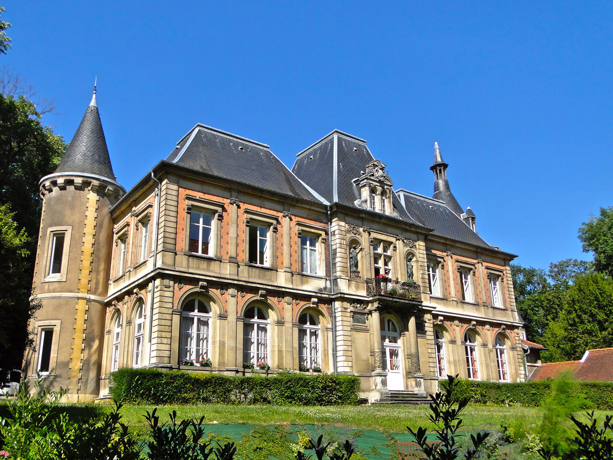
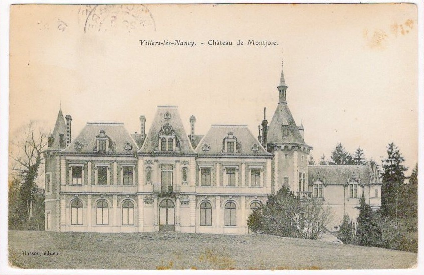

Le château de l'Asnée
Entrée 11 rue de Laxou | Le château abrite l’association REALISE et n’est pas accessible au public | Latitude : 48.6741516787508 - Longitude : 6.1424882146804975
L’Asnée est d’abord un lieu-dit. Au XVIe siècle, on y trouve un pâquis, un moulin, et une tuilerie, ainsi qu’un clos où les pestiférés nancéiens sont entassés dans des loges.
Au XVIIIe siècle, la propriété appartient à Barbarat de Morizot, seigneur de Brabois. Au XIXe siècle, les Lefebvre de Montjoye, alors propriétaires des actuels presbytères de la paroisse Saint-Fiacre et Tour Greff, vendent ces deux propriétés et acquièrent le domaine de l’Asnée où ils font édifier l’actuel château. Alors que l’architecture de l’époque est imposée par Eiffel ou Baltard, le style choisi est un mélange de Louis XIII et de gothique. La construction est confiée à Prosper Morey, bâtisseur de la basilique Saint-Epvre. Elle est édifiée au milieu du parc.
En 1933, la propriété est vendue à l’association diocésaine. Le séminaire est construit dans ces mêmes années par l’architecte Jules Criqui (architecte de l’église Sainte-Thérèse) qui en conçoit les plans et prend le parti de l’implanter devant le château.
Ancien lieu-dit dont la première mention remonte à 1491, ce nom vient probablement de « aulnée » (lieu planté de saules). Son orthographe a souvent varié au fil des siècles. L’Asnée est aussi un ruisseau qui se jetait dans le ruisseau de Saurupt puis de Laxou, fournissant l’eau à l’étang Saint-Jean et aux douves des fortifications de Nancy.
Carte
Photos
